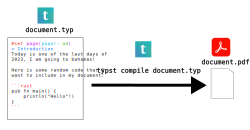

1 Introduction
Typst is a new markup-based typesetting system for the sciences written in Rust. The Typst works similarly to other typesetting systems. In resume, you write a Typst source file which describes the document you want to create, and then, you invoke the Typst compiler to build the document you described in the source file.

Typst is open-source and is freely available at GitHub, just download the release file according to your operational system and install the tool into your system.
2 What I like about Typst
First of all, Typst is an amazing tool! So let me describe the features about it that I like the most.
2.1 Have good documentation!
Typst have a very good documentation, and this makes all the difference in the world! Because learning how to use the tool becomes so much easier when you have a good support material to rely on.
2.2 Have fast compilation time!
LaTex have a known weakness of being slow to compile the input file and producing the output PDF. Typst does not suffer from this problem, because it has a much faster compilation time.
Compiling a very small Typst document takes about 0.05s in my machine, while compiling essentially the same document in LaTex take 0,26s:
$ time typst compile example.typ
0,05s user 0,06s system 88% cpu 0,121 total$ time xelatex example.tex
0,26s user 0,16s system 80% cpu 0,522 totalThis is an important advantage of Typst, because it delivers a much faster feedback loop into your workflow. In other words, if you reduce the compilation time, you will spend less time waiting to see if your code works! By spending less time trying to see the output of your work, you can spend more time in what really matters! Like writing more content or refining your work.
2.3 Understandable error messages
For me personally, one of the great weaknesses of LaTex is it’s error messages, which are very obscure, and honestly, useless in the majority of cases. And I mean this.
In contrast, Typst have much more understandable error messages. Messages that are easy to understand, and that are easy to relate back to your source code. Take this error messages from Typst as an example:
error: the character `#` is not valid in code
┌─ posts/2023/2023-12-31-introducing-typst/example.typ:2:3
│
2 │ #set text(font: "Inconsolata")
│ ^Or maybe this other error message:
error: expected function, found content
┌─ posts/2023/2023-12-31-introducing-typst/example.typ:1:19
│
1 │ #show raw: code => {
│ ╭────────────────────^
2 │ │ set text(font: "Inconsolata")
3 │ │ }[#code]
│ ╰─^
help: error occurred while applying show rule to this raw
┌─ posts/2023/2023-12-31-introducing-typst/example.typ:7:16
│
7 │ Testing if this `raw code element` uses the show rule.
│ ^^^^^^^^^^^^^^^^^^
2.4 Very good quality output
LaTex is known for producing very-high quality documents, and Typst leaves nothing to be desired in this aspect. Specially because the Typst development team ported some of the core algorithms behind LaTex into Typst.
So Typst also produces very-high quality documents because it learned from the great powers of LaTex.
2.5 Preview and Incremental compilation
Typst have a preview mode which is very good and powerful. There is a great video in Typst’s website that demonstrates it.
When you use this preview mode, Typst create a new window that shows the preview of the output document of your source code, and any changes that you make to your source code are instantly reflected (pratically in real time) into the previewed document.
This preview in real time of the output document is very good when you are trying to refine the aesthetics of your document, but you are not very sure yet on how to do it properly, and you want to test different options.
This power from the preview mode is only possible, because Typst has an incremental compilation engine inside Typst compiler, which is capable of compiling just the section of your code your changed, instead of recompiling the entire source file, and regenerate the entire PDF output again.
2.6 Show rules are awesome!
Show rules with the #show directive are an amazing way of customizing specific elements of your document. But the true power of #show directives is that you can write more clear and organized code with them.
When you want some parts of your document to have, for example, font Inconsolata with size 14pt, and other parts of the same document to have completely different settings, like font Times New Roman size 12pt, and coloured red, you usually end up redefining these settings over and over again.
You might for example set a “default setting” to be applied over the entire document. Then, you overrule this default setting by setting specific settings every time that a specific element appears across the document. So you end up with a lot of duplicated code, that redefines the same settings over and over again, across the entire source file.
Show rules with the #show directive eliminates this necessitty by allowing you to specify a set of settings to be applied to every element of type x that appears in your document. As an example, if I want to use font Inconsolata size 14pt in any raw code that is exposed inside my document, I can set a show rule to be applied over any element of type raw, like this:
#show raw: code => {
set text(font: "Inconsolata", size : 14pt)
code
}
Testing if this `raw code element` uses the show rule.With the show rule that I created above, any raw code that I create across my Typst document will be rendered in the PDF output using font Inconsolata size 14pt. To some extent, show rules in Typst are almost like CSS code that uses CSS selectors to apply certain rules to specific HTML elements.
2.7 Reusing code is much easier
Reusing code or settings across different parts in your document in Typst is much more straightforward than it is in LaTex. Because is very easy to create functions in Typst, or show rules that can spread a piece of code over multiple locations of your document.
In other words, Typst looks like a real programming language. You can easily create functions in Typst to reuse the same piece of code. In contrast, in LaTex, there is no notion of functions per se, you have macros instead. When you want to reuse a piece of code , you normally you create new commands (with the \newcommand macro). This makes LaTex code harder to read and to comprehend in my opinion.
2.8 CSL is now available in Typst!
Typst is very young, and until very recently, the use of different citation styles was very limited. But on the most recent version of Typst, a CSL (Citation Style Language) processor was added! And as consequence, we can use now any possible citation style in Typst documents by providing a CSL file to the style argument of the bibliography() function to be processed in conjunction with the Typst source file.
For example, in Brazil, academia have very rigorous rules about how citation should be written in a scientific article, and these rules are specified by the norms produced by the ABNT (Brazilian Agency of Technical Norms) agency. Now, with the new additions to Typst, we can easily write citations using the brazilian ABNT citation style, by providing a CSL file like the CSL styles produced by IBICT - Brazilian Institute for Science and Technology Information.
2.9 Syntax similar to Markdown
Typst have a markup language whose syntax is similar to Markdown. And this is a great thing. Because the markup language in LaTex is…., well, it is not awfull to write, but it produces an awfull visual mess in the text you write.
For example, if your write some text in LaTex that have a lot of emphasized words, you need to add a lot of \textbf{} or \emph{} macros in it, and, as a result, your text looks very messy. In typst, you just surround each word by stars (*), and, as consequence, you leave much less visual noise in your text. In other words, your text looks cleaner (or clearer) in Typst.
3 Conclusion
Typst is now a really great alternative to LaTex to compose scientific articles, or just any type of good PDF document. I did not find anything about Typst that I don’t like yet. So, my fisrt impressions on the system are only positive, and I think Typst has a great future ahead of it.
If you use LaTex a lot, and are not familiar yet with Typst, I highly recommend you to at least try it, and see what you think. Peace✌️ !